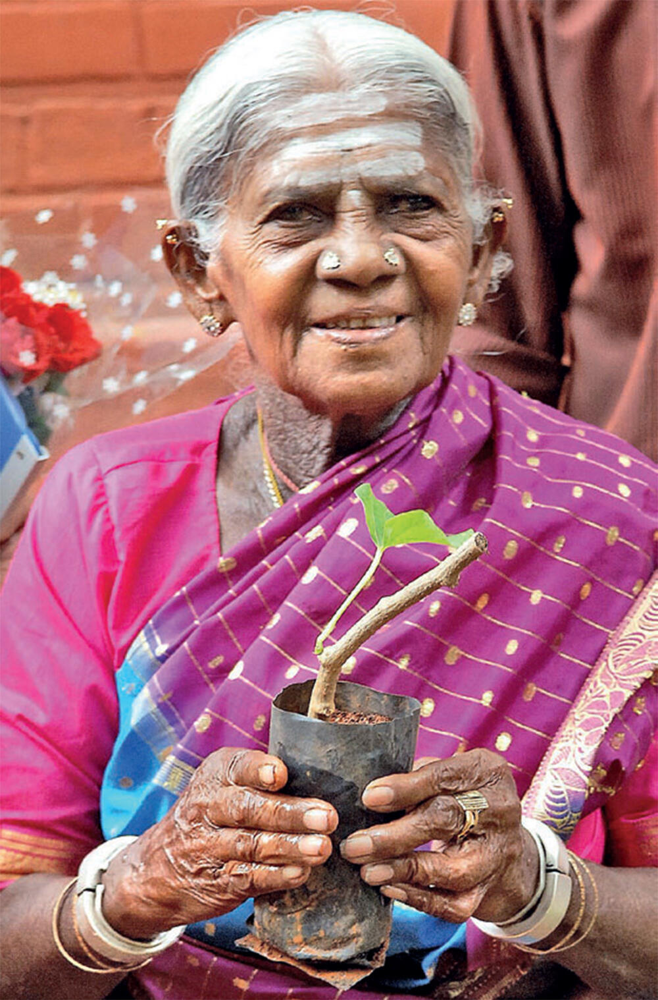

Saalumarada Thimmakka, lovingly known as the “Mother of Trees”, was a humble yet powerful environmentalist from Karnataka whose lifelong dedication transformed a stretch of barren highway into a living green corridor.
Despite her lack of formal education and personal hardships, she nurtured hundreds of banyan trees as though they were her own children — showing the world that love, resilience, and commitment can grow forests.
Her legacy continues to inspire generations to care for the planet, one sapling at a time.
Born: 30 June 1911 in Gubbi taluk, Tumakuru district, Karnataka.
Died: 14 November 2025 in Bengaluru, Karnataka, aged 114.
Why She Is Famous: She planted and nurtured 385 banyan trees along a 4.5 km stretch between Hulikal and Kudur.
Other Work: Over her life, she also planted nearly 8,000 other trees.
Personal Story: She had no formal schooling, married at a young age, and she and her husband, Chikkaiah, were unable to have children.
How She Did It: The couple fetched water over long distances, carried saplings, dug pits by hand, protected them from cattle, and cared for them daily.
Recognition: Awarded the Padma Shri in 2019. Also received honors like the Nadoja Award, National Citizen Award, and Vrikshamitra Award.
Legacy: Her work became a powerful symbol of grassroots environmentalism. Even in old age, she inspired millions — urging people to treat trees like their own children.
